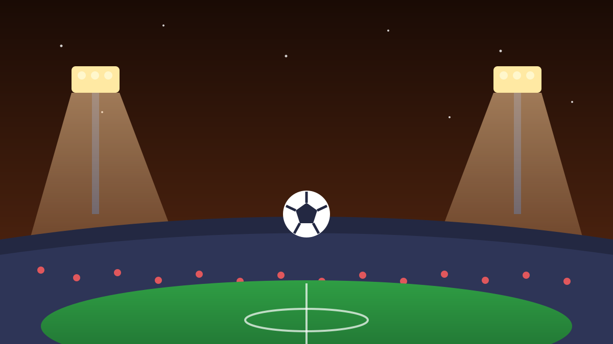

1 / 7

⚽ OLAHRAGA
Sejarah Baru: Rider Indonesia Balapan di Kandang Sendiri!
MotoGP Mandalika 2026 start besok, 9–11 Oktober. Untuk pertama kalinya ada pembalap Indonesia yang turun di ajang MotoGP-nya sendiri. Geser buat full story-nya →
2 / 7
🏍️
Siapa aja rider Indonesia-nya?
Mario Suryo Aji turun di kelas Moto2, dan Veda Ega Pratama di kelas Moto3, di Pertamina Mandalika International Circuit, Lombok, NTB.
Keduanya balapan di depan pendukung sendiri —jutaan pasang mata dari seluruh dunia bakal nonton. Auto merinding.
3 / 7
📜
Kali kelima tuan rumah, pertama kali ada rider lokal
Tahun ini adalah kali kelima Sirkuit Mandalika jadi tuan rumah MotoGP — dan untuk pertama kalinya pembalap Indonesia turun mengaspal di ajang tersebut.
Balapannya 9–11 Oktober 2026. Jumat latihan bebas, Sabtu kualifikasi + Sprint Race, Minggu race utama MotoGP 27 lap.
4 / 7
🔥
Hype-nya udah panas dari Juli
Antusiasme publik udah kelihatan sejak acara fans meet & greet di Anjungan Sarinah, Jakarta, 17 Juli 2026 — ratusan orang padati konvoi dari Senayan sampai Bundaran Semanggi.
Veda bilang, balapan di Mandalika sebagai tuan rumah adalah kebanggaan dan dia bakal kasih yang terbaik buat Indonesia. Semangat local heroes!
5 / 7
💰
Efek ekonominya nggak main-main
Tahun lalu, ajang ini bikin dampak ekonomi Rp4,9 triliun buat NTB. Lebih dari 600 UMKM terlibat tahun ini, dan seluruh marshal-nya warga lokal.
Artinya: event ini bukan cuma soal balap, tapi ngangkat ekonomi dan SDM warga sekitar. Win-win.
6 / 7
⭐
Marc Marquez udah sampai Lombok
Rider top dunia juga udah pada berdatangan. Marc Marquez mengunggah sambutan hangatnya di Lombok, "What a welcome Lombok! Terima kasih 🫶🇮🇩" — ribuan komen penggemar Indonesia banjiri postingannya.
Plus ada riders parade yang disambut kerumunan massa. Hype weekend ini fix rame parah.
7 / 7
🤔
Efeknya ke lo apa?
Ini momen "kita bisa" versi balap motor — anak muda Indonesia sekarang beneran bisa bersaing di level dunia. Buat lo yang suka otomotif, ini bukti jalanin passion sampai mentok itu worth it.
Dan kalau weekend ini lo ke Lombok atau nonton bareng: Mandalika lagi jadi panggung dunia. Dukung Mario & Veda, biar Merah Putih berkibar di podium kandang! 🇮🇩